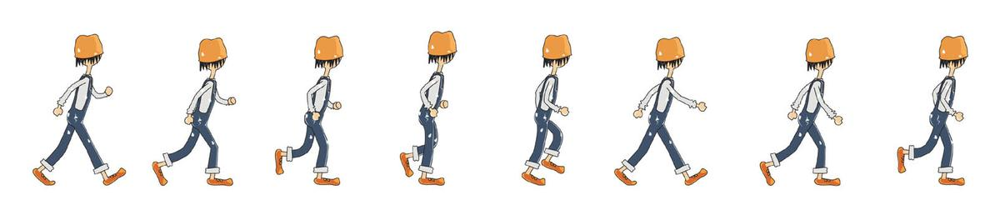

Frame-by-frame animation is a very simple practice of CSS3 animation. But these days lots of friends asked me some questions such as how to make a frame-by-frame animation by using CSS3? Why not use gif pictures? We already have gif pictures, why do we need CSS animation?
So in this blog, I want to briefly talk about how to make frame-by-frame animation, and its advantages.
1. Why not gif?
(1) Reduce loading time
As we all know, gif picture will cost lots of space and loading time, especially in the mobile end. But by using CSS animation, we will only use one static picture. For example, there is a gif picture below, and its size is about 60k. But if we change it into sprite picture, the size will be half.
(2) Gif picture can't do interaction with users
For example, we all have used microblog, if we put our mouses on the static picture, it will show the dynamic picture, but if there is a dynamic picture and we want to let it stop when mouse is over it. Can gif do this? No. Can CSS do this? Yes! Let's look at the following instance, just put your mouse over the walking man, it will stop.(Please see this effect in PC end)
Ok, too much. Let's talk about how to do this effect.
2. Do the effect!
(1) Preparation.
We need a sprite picture like below, if you want to draw a walking man using CSS3/Canvas, it's your choice, but here I only want to show the most common and simple way.

(2) Then, we should use "background-size" and "background-position" to control the visible parts. And use "animation" to do the effect, there is a attribute named "step" to control frame-by-frame animation.
.testImg {
display: block;
width: 100px; height:150px;
background: url(xxx.jpg) 0 0 no-repeat;
background-size: 750%;
animation: testImg steps(8, start) 1.2s infinite both;
}
@keyframes testImg {
0% {background-position: 0%;}
12.5% {background-position: 14.5%;}
25% {background-position: 28.5%;}
37.5% {background-position: 41%;}
50% {background-position: 54%;}
62.5% {background-position: 67%;}
75% {background-position: 83%;}
87.5% {background-position: 98%;}
}
Done? Can you find any questions? If you use the same codes like above, you will get the following effect:
How could it be? Actually, the default animation method is continuous animation, so we should set its changing period and staying period. Let's change the animation codes together. (We should set the pre-end time is a little bit smaller than next-start time)
@keyframes testImg {
0%, 12.4% {background-position: 0%;}
12.5%, 24.9% {background-position: 14.5%;}
25%, 37.4% {background-position: 28.5%;}
37.5%, 49.9% {background-position: 41%;}
50%, 62.4% {background-position: 54%;}
62.5%, 74.9% {background-position: 67%;}
75%, 87.4% {background-position: 83%;}
87.5%, 100% {background-position: 98%;}
}
(3) Mouse-over-stop effect
The key is how to stop the effect? Just think about it. Which is related to control the animation? "animation-play-state"! We should add "mouseover" and "mouseout" events to the image, when the mouse is over the picture, we should set the "animation-play-state" be "paused". Things done!
Final words
Some students always think the front end development is easy so that they just learn a little and become self-satisfied. Yes, the beginning is very simple, however, a few people stick to it. That's why there are a lot of people doing the front end, but the excellent front-end engineers are so few. Keep doing one thing and make it best, which is I think the only principle of doing the front end.
(That's all)